5580C AIR BAG SYSTEM
- Path
- Descriptions > 55 ELECTRICAL EQUIPMENT > 5580 SPECIAL ACCESSORIES > 5580C AIR BAG SYSTEM
- Kind
- system description
- Applies to
- all engines; all production periods
- Interactive page
- https://sloeber94.github.io/elrnDB-aBrrSpdr/en/#/946001240
Applies to: all engines; all production periods
PASSIVE SAFETY SYSTEM
Introduction
The vehicle is equipped with an electronic control system that governs the activation of specific containment devices in the event of frontal or side impact:
The frontal protection system includes:
- driver and passenger front air bags with two-stage activation;
- single-stage driver's knee bag, single-stage passenger's knee bag (option);
- front belts with pretensioner and regressive load limiter;
- direct mesh rear seat belts (without idler ring) and strap buckle branches
- decentralised supplementary front impact detection sensor;
- passenger air bag manual disabling switch.
The side protection system comprises:
- two sidebags under the fabric on the front seats;
- two drop-down headbags housed in the under-roof rails (not present on Spider versions);
- two impact detection sensors located in the central pillar.
The front protection system features new Air Bag Smart 2 activation software that automatically adapts activation parameters according to impact severity.
Driver and passenger front airbags feature two-stage activation:
- when the impact is of moderate severity, the electronic control unit controls the first airbag activation stage and then, following a significant temperature increase, the second stage so that the energy discharged onto the occupant is not harmful.
- for very severe impact, the control unit activates the second stage after a small temperature rise, i.e. almost immediately, so that as much of the occupant's kinetic energy as possible can be absorbed before he or she strikes the steering wheel or dashboard.
A supplementary ECS “Early Crash Sensor” on the front beam near the bonnet lock also helps the electronic control unit to operate more quickly than a conventional system so that the airbag activation stage is completed before the occupant's body begins to move towards the steering wheel or dashboard.
The electrical connection between the airbag system components is via dedicated wiring integral with the dashboard cable loom and the rear cable loom.
The control unit is connected to the system via two connectors, one for the dashboard lead and the other for the rear lead.
The control unit is connected to the vehicle CAN, through which it exchanges information with other nodes, turns on warning lights in the dashboard and the front courtesy light and performs diagnostic operations.
Because the control unit is a node in the CAN, the airbag system is connected:
- to the standard diagnostic socket via the CAN and not the dedicated K line;
- to the instrument panel, again via the CAN, to control the airbag system failure warning light;
- to the Body Computer for potential end of line customisation (Proxy) with a consequent reduction in the number of spare parts.
The control unit also controls the "seat belt unfastened" buzzer and the "seat belt unfastened" and "passenger airbag deactivated" warning lights on the front courtesy light via a direct connection.
Composition
The system consists of the following devices:
- an electronic control unit;
- two (driver and passenger) front air bags with dual stage activation,
- a driver's knee bag with single-stage activation as standard,
- a driver's knee bag with single-stage activation as an option,
- an ECS decentralised supplementary impact detection sensor (Early Crash Sensor),
- passenger air bag manual disabling switch,
- two sidebags under the fabric on the front seats;
- two Window Bag modules for side protection of the occupants (not present on Spider versions);
- two side impact sensors in the side pillars;
- two electronic pretensioners on the front belt reel.
The following indications show the system is working properly:
- system fault warning light (red) in the instrument panel:
- passenger air bag disabled warning light on the front courtesy light;
- front seat belts not fastened warning light (in the front courtesy light until JAN 06 and later on in the instrument panel)
- connection via B- CAN with the diagnostic socket - integral with the Body Computer - to test operation via the EXAMINER.
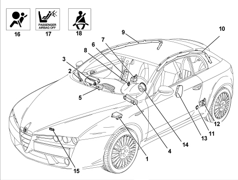
1. Electronic control unit
2. Passenger Air Bag disablement switch
3. Passenger Air Bag module
4. Driver's knee bag module
5. Passenger knee bag module
6. Passenger side bag module
7. Pretensioner on passenger side buckle
8. Passenger side impact sensor
9. Passenger side Window Bag module (not present on Spider versions)
10. Driver's Window Bag module (not present on Spider versions)
11. Passenger side impact sensor
12. Pretensioner on driver's side buckle
13. Driver's side bag module
14. Driver's Air Bag module
15. Frontal impact sensor
16. Air Bag system fault indication warning light
17. Passenger side front airbag deactivation warning light
18. Front occupant seat belt unfastened warning light
Electronic control unit
The following diagram shows the control unit.
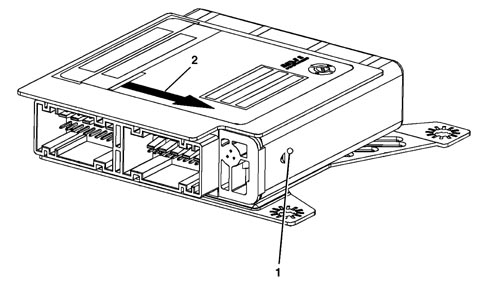
1 - Electronic control unit
2 - Indication showing direction of motion
The control unit is the central occupant protection processing unit and is fastened rigidly to the vehicle floor pan near the central tunnel. It manages all the containment system detection and activation devices by processing signals from the various sensors distributed throughout the vehicle and internal sensors.
Composition
The control unit contains an electronic deceleration sensor that enables safety device activation. This sensor consists of two-directional accelerometers that are part of the ECS front sensor and power the operation of the side sensors.
Operation
Frontal impact:
When the impact is of moderate severity, the electronic control unit controls the first airbag activation stage and then, following a significant temperature increase, the second stage so that the energy discharged onto the occupant is not harmful.
Conversely, in the case of very severe impact, the control unit activates both stages almost simultaneously to absorb most of the kinetic energy from the occupant's body before it strikes the steering wheel or dashboard.
The supplementary ECS sensor also allows the airbag to be activated earlier than a conventional system so that the airbag activation stage is completed before the occupant's body begins to move toward the steering wheel or dashboard.
Side impact:
Similarly, when side impact occurs, the control unit is able to recognise direction and intensity and thus activate both airbags present on the side affected by impact. To provide total cover against side impacts, two satellite sensors located in the centre pillars are used.
When a side impact takes place, the satellite sensors detect the impact signal directly along the transverse axis of the vehicle and send it to the control unit. When processed by the control unit microprocessor, this signal reveals the severity of the side impact and is thus able to decide whether to operate the sidebags on the affected side, only if the control unit safety sensor enables the activation.
The side airbags (window bag and Side Bag) are activated simultaneously and independently of the front safety devices.
After each activation of one of the controlled systems (pretensioners, front airbags, sidebags), the control unit stores the activation in its permanent memory and controls activation of the fault warning light on the instrument panel.
Before it is replaced, the control unit guarantees activation of individual devices within the following limits:
- 3 impacts with activation of front seat belt pretensioners alone;
- 3 impacts in total (right or left) with side bag activation;
- 1 impact with activation of the pretensioners and front airbags;
- any combination of the above cases up to the maximum number.
If one of the limits described is not reached, it will be possible to reuse the control unit after carrying out the RESET procedure using the EXAMINER once system operating conditions have been restored. The final activation, corresponding to the maximum number for the limits indicated above, will prevent further reset procedures.
Control unit pin out
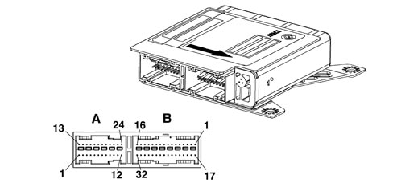
A -FRONT CONNECTOR (dashboard wiring, light blue)
PIN | SIGNAL |
1 | Earth |
2 | Ignition-operated power supply |
3 | (N.C.) |
4 | (N.C.) |
5 | Front impact sensor earth |
6 | (N.C.) |
7 | B-CAN A line |
8 | B-CAN B line |
9 | Passenger Air Bag disablement key (+) |
10 | Passenger Air Bag disablement key (-) |
11 | (N.C.) |
12 | Front impact sensor signal |
13 | Passenger air bag - first stage (-) |
14 | Passenger air bag - first stage (+) |
15 | Driver's air bag - first stage (+) |
16 | Driver's air bag - first stage (-) |
17 | Passenger air bag - second stage (-) |
18 | Passenger air bag - second stage (+) |
19 | Driver's airbag - second stage (+) |
20 | Driver's airbag - second stage (-) |
21 | Passenger knee bag (-) |
22 | Passenger knee bag (+) |
23 | Driver's knee bag (+) |
24 | Driver's knee bag (-) |
B -REAR CONNECTOR (rear wiring, black)
PIN | SIGNAL |
1 | Driver's Head Bag module (-) (not present on Spider versions) |
2 | Driver's Head Bag module (+) (not present on Spider versions) |
3 | Passenger side Head Bag module (+) (not present on Spider versions) |
4 | Passenger side Head Bag module (-) (not present on Spider versions) |
5 | Driver side bag (-) |
6 | Driver side bag (+) |
7 | Passenger side bag (+) |
8 | Passenger side bag (-) |
9 | (N.C.) |
10 | (N.C.) |
11 | (N.C.) |
12 | (N.C.) |
13 | Driver's belt pretensioner (-) |
14 | Driver's belt pretensioner (+) |
15 | Passenger belt pretensioner (+) |
16 | Passenger belt pretensioner (-) |
17 | (N.C.) |
18 | Passenger presence sensor signal |
19 | Driver's seat belt fastened switch signal |
20 | Passenger seat belt fastened switch signal |
21 | Driver side impact sensor earth |
22 | Seat belts not fastened buzzer signal |
23 | Passenger side impact sensor earth |
24 | (N.C.) |
25 | Passenger Air Bag disabled warning light |
26 | Seat belt not fastened warning light |
27 | Driver side impact sensor power supply |
28 | Passenger side impact sensor power supply |
29 | (N.C.) |
30 | (N.C.) |
31 | (N.C.) |
32 | (N.C.) |
Self-diagnosis
The control unit carries out continuous self-diagnosis of system operation. More specifically:
- it detects and stores faults;
- it diagnoses connnections to system components and any type of fault that has occurred;
- it indicates the source of these faults by turning on an instrument panel warning light.
Faults stored in the control unit may be deleted only after the fault has been repaired by means of the EXAMINER device.
Driver's air bag module
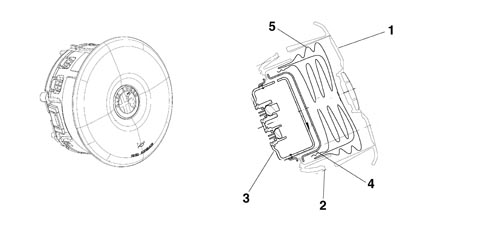
1 - Cover
2 - Containment case
3 - Gas generator
4 - Retaining rings
5 - Bag
Specifications
The driver's air bag is a passive safety device. It takes the form of a bag that inflates automatically in the case of frontal impact to interpose itself between the driver's body and front passenger compartment structures. The Air Bag module is installed in the middle of the steering wheel. The module cover also acts as a horn control.
Composition
The module comprises:
- a plastic cover that tears at preset points when activated to allow the bag to expand correctly.
- a 60 litre bag, made out of nylon thread woven to minimse skin abrasions in the case of contact and folded in such a way as to ensure that inflation is gradual and not directed toward the driver;
- two pyrotechnic type gas generators;
- a containment case.
Operation
Bag inflation is determined by a gas generator that offers two intervention stages that can be activated separately according to impact severity.
Each gas generator is activated by two electrical resistances that burn propellent inside the generator to allow the bag to expand. When fully inflated, the bag is in an optimal position to protect the occupant. Bag deflation is immediate, due to two holes present in the lower part of the bag. This holes also soften contact between passenger and bag to avoid the risk of abrasions.
Clock spring
The following figure shows the clock spring.
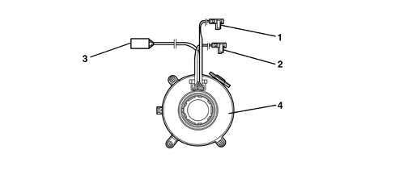
1 - Electrical connectoin for connecting air bag first stage
2 - Electrical connection for connecting air bag second stage
3 - Steering wheel electical function lead
4 - Clock spring
Specifications
The clock spring transfers the electrical signal to controls on the steering wheel (horn and other optional controls) and connects the airbag module without risk of breakage.
The device consists of two plates and is built into the stalk unit via its lower plate. It is secured in place by means of fasteners on the upper plate. Inside the two plates, the leads connecting the module and horn buttons are wound in a coil so that they can follow steering wheel movements.
Clock spring PINOUT:
PIN | SIGNAL |
1 | Negative signal from horn control button |
2 | N.C. |
3 | B-CAN B |
4 | B-CAN A |
5 | Ignition-operated power supply |
6 | Earth |
7 | Selespeed control earth |
8 | Selespeed control signal |
9 | Level 2 airbag (+) |
10 | Level 2 airbag (-) |
11 | Level 1 airbag (-) |
12 | Level 1 airbag (+) |
Composition
The clock spring is fitted with three leads on the steering wheel side. Two of these are used to connect the air bag module (first and second stage) and one to connect the steering wheel electrical functions (horn, radio controls).
A ring on the lower plate, steering wheel side, automatically prevents both plate from turning in relation to one another hwen the device is disconnected from the steering wheel.
The new clock spring is equipped with a safety key for transport, which must be removed after installation.
Operation
Inside the two plates, the leads connecting the air bag module and the various electrical functions are wound into a spiral with sufficient coils to follow the steering wheel rotations. The upper plate is turned by fasteners on the inside of the retaining ring that fit into the seat on the steering wheel hub. In a working position, the steering wheel presses on the ring to release it from its fasteners and thus allow both plates to turn freely. When the steering wheel is removed, the spring-loaded ring locks rotation between both plates. This function prevents the upper plate, now no longer secured to the steering wheel, from turning freely and unwinding or winding the coil inside the device and possibly causing it to break.
The following must be observed during operations that require removal of the steering wheel and device.
- always work with the car's wheels aligned straight ahead;
- secure both plates with a band for safety before removing the device from the steering wheel stalk unit.
Passenger air bag module

1 - Bag
2 - Gas generator
3 - Connector
Specifications
The passenger airbag module is a passive safety device that protects the front passenger in the event of front impact by means of a bag that interposes itself between the occupant and the vehicle dashboard.
Composition
The module comprises:
- a metal containment mount;
- a paper bag protection that opens along predefined tear marks in the event of activation to allow the bag to emerge;
- a 120 litre bag in nylon, a fabric that minimises skin abrasions in the event of contact. The bag is folded so that it does not inflate directly towards the occupant.
- two pyrotechnic type gas generators;
- bag guide brackets;
Operation
The passenger airbag operates in exactly the same way as the driver's side airbag.
Bag inflation opens the flap in the dashboard along predefined cut lines. When fully inflated, the bag is in an optimal position to protect the occupant.
The braids inside the airbag unfold in such a way as to allow inflation to the maximum specified dimensions to prevent collateral damaging effects on passengers.
Inflation is immediate due to the presence of vent holes in the end of the bag.
Passenger side airbag disablement key switch
A key switch at the end of the dashboard on the passenger side (accessible only with the door open) allows the user to deactivate the passenger airbag so that a child seat can be installed without problems. On the front seats, child seats are positioned facing towards the back of the car.
Operation
A switch operated by means of the emergency key in the TEG allows enablement (ON) and disablement (OFF) of the air bag module on the passenger side.
In this case, the control unit cuts out passenger air bag activation but enables normal operation of the pretensioner (only with seat belt fastened) and the side bags. This happens because if a passenger is present but the switch has been left OFF by accident, the air bag will not activate - only the pretensioner.
Deactivation is indicated by a warning light on the front courtesy light coming on.
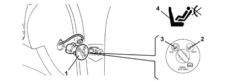
1 - Key-operated switch
2 - OFF position: Passenger air bag disabled
3 - ON position: Passenger air bag enabled
4 - Passenger side disablement warning light
Composition
The unit consists of a case that houses the switch, a key barrel inserted in the case and held in place by a clip and a plate that indicates the positioned assumed by the switch (ON or OFF).
Switch faults are indicated by activation of the air bag system fault warning light.
During the normal key on diagnostic procedure (4 seconds), the electronic control unit checks switch status. if the status detected is OFF, it excludes the module from activation, stores the corresponding signal and controls activation of the relevant warning light on the instrument panel. If the recognised status is ON, the warning light flashes for an additional four seconds at the end of the four second diagnostic procedure and then goes off.
In the case of switch anomalies or faults, the system reacts as follows:
- passenger side module is not activated
- air bag system fault warning light comes on
- passenger side air bag module disablement warning light comes on
- deactivation status is saved.
Knee air bag module

1 - Outer cover
2 - Bag
3 - Gas generator
4 - Generator mount
5 - Mounting plate
6 - Safety plate
Specifications
Two air bag modules are also fitted in the lower part of the dashboard in front of the passenger's knees and beneath the driver's steering wheel. These modules protect the lower limbs and increase protection for the driver and front passenger, particularly by preventing them from sliding forward, which is a possible cause of injury, particularly to the chest.
Composition
The knee bag module consists of a metal container that houses the gas generator and a nylon bag.
The container is secured to a mounting plate and a safety plate that secures it rigidly to the lower part of the dashboard.
Operation
The gas generator is electrically activated by means of a signal from the electronic control module. Following this signal, a pyrotechnic activation is triggered that causes the gas in the generator to expand. The expanding gases emerge through openings to inflate the bag. When the bag is inflated, the bag is in an optimum position to perform its role of protecting the occupant. Bag deflation is immediate due to the presence of vent holes in the end of the bag.
Side bag module
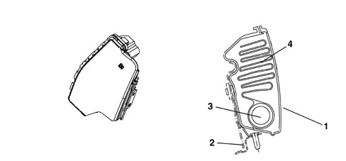
1 - Outer cover
2 - Fastening
3 - Gas generator
4 - Bag
Specifications
The front seats contain two side bag modules installed beneath the trim to increase the protection offered by the body in the event of side impact.
This device ensures the airbag is always in an optimum position in relation to the occupant, regardless of the angle of the seat or the size of the occupant.
The side bag protects the chest and pelvis areas and also - together with the door panels - protects critical areas of the body such as the ribs and abdomen. Its position on the seat always ensures maximum efficacy irrespective of seat position, even if the seat occupant is not seated correctly, because bag opening dynamics minimise the risk of body damage due to impact against the body.
Composition
The side bag module consists of a metal container that houses the gas generator and a nylon bag with a volume of 12 litres.
The plastic container includes a paper bag protetion with preset break points. When the backrest cover is fitted, the exterior of the trim in the area over the bags includes seams designed to yield easily to allow the bag to inflate.
The module is connected to the electrical system by means of two leads with yellow sheaths. These are contained, together with the seat earth connection lead, in a protective fabric-lined duct secured to the seat structure. Both leads end in a connector that is secured to the floor beneath the seat.
Operation
The gas generator is electrically activated by means of a signal from the electronic control module. Following this signal, a pyrotechnic activation is triggered that causes the gas in the generator to expand. The gases expand and emerge through openings to inflate the bag. Bag inflation causes the weak seams in the backrest trim to yield and allow the bag to emerge. When fully inflated, the bag is in an optimal position to protect the occupant. Bag deflation is immediate due to the presence of vent holes in the end of the bag.
Window bag module (not present on spider versions)
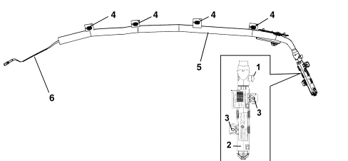
1 - Connector
2 - Gas generator
3 - Fastening plates
4 - Bag retaining clips
5 - Bag
6 - Sealing brace
Specifications
The window bags are activated together with the sidebags and interpose themselves between the occupant and the vehicle to prevent the head coming into contact with highly intrusive objects such as glass, pillars etc.
Because the window bags extend from the front pillar to the luggage compartment, they protect front and rear passengers. The window bag system offers the best performance due to the broad area covered and their ability to be self-supporting even without a backing.
Composition
The window bag module consists of:
- a gas generator secured by mounts to the rear car pillar;
- a flexible pipe in permeable cloth secured by a band to the gas generator that diffuses the gas evenly over the entire length of the bag;
- a bag of about 30 litres in volume secured to the gas generator together with a flexible pipe. It is made out of permeable nylon and folded inside a containment sleeve. The bag is designed to ensure, once fully inflated, correct absorption of impact energy while maintaining the occupants' heads at a proper distance from the impact area. Once fully inflated, the gas leaves the bag immediately through the porous tissue.
- plastic clips that secure the bag to the ceiling rail;
- plastic plates to secure the bag onto the vehicle;
- a retaining strap secured to the front pillar that holds the bag in position once inflated;
Operation
The gas generator is electrically activated by means of a signal from the electronic control module. Following this signal, a pyrotechnic activation is triggered that causes the gas in the generator to expand. The expanding gas emerges through special openings and is distributed evenly along the length of the bag through the hose to make the bag inflate. The increase in bag volume causes the fastening container to break, the sleeve seams to yield and the trim to open. Everything is arranged so that the bag emerges correctly downward. The bag is made to inflate correctly by a retaining strap on the front end of the bag. When fully inflated, the bag is in an optimal position to protect the occupant. The bag deflates immediately after being inflated by the gas because the fabric is permeable.
Front impact satellite sensor
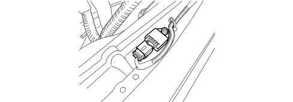
Specifications
A supplementary ECS “Early Crash Sensor” on the front beam near the bonnet lock also helps the electronic control unit to operate more quickly than a conventional system so that the airbag activation stage is comleted before the occupant's body begins to move towards the steering wheel or dashboard.
Side impact satellite sensors
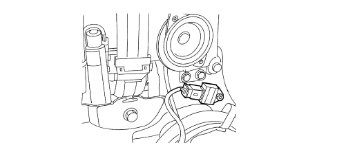
Specifications
The side protection system consists of the airbags and also an electronic control circuit that ensures the system operates correctly. Two satellite sensors containing an accelerometer are installed inside the side pillars to measure accelerations resulting from side impact.
Operation
If the acceleration level detected by the relevant sensor causes a given threshold to be exceeded, the information is compared with a measurement obtained by a safety sensor in the air bag system electronic control unit. If the measured values are consistent, the control unit controls activation of the side bags and window bags on the side affected by impact.
Front seat belt pretensioners
Specifications
The pretensioners - located on the front seat belt reel - are pyrotechnic devices that are activated by a signal from the electronic control unit. Activation of the seat belt pretensioners is controlled by the same strategy as the air bags.
The pretensioners are designed to take up slack in the seat belt to ensure it holds the occupant against the backrest from the first moments of impact, thus reducing movement inside the passenger compartment.
The seat belts are also fitted with load limiters which decrease the force transmitted by the belts to the chest: the force level at which the limiters act is sufficient to considerably reduce the risk of fracturing shoulder blades and ribs, even in people with brittle bones (e.g. the elderly).
Operation
The following figure shows the pretensioner mechanism.
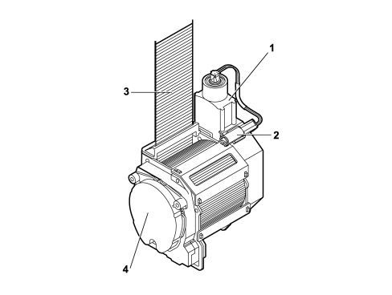
1 - Gas generator
2 - Electrical connector
3 - Belt
4 - Reel
When the car decelerates to a sufficient extent, as measured by system acceleromters, the electronic sensor in the electronic control unit sends a signal to trigger the gas generator pyrotechnic charges. The combustion of the propellant produces a chemical reaction creating inert gas whose pressure produces a force that thrusts a piston upwards, changing the rotary movement of the reel into the opposite direction of the seat belt, rewinding it by a few centimetres.
Airbag system warning lights
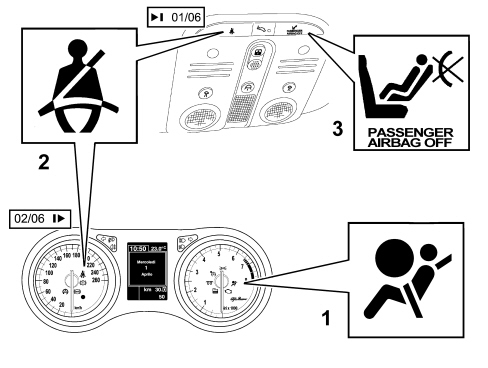
1 airbag system fault warning light on the instrument panel
2 passenger air bag disabled warning light on the front courtesy light;
3 warning light signalling seat belts not fastened, in the instrument panel (until JAN 06, in the front courtesy light)
Air bag system fault warning light
With the TEG inserted, the fault warning light (red) comes on for about four seconds (initial self-diagnosis stage) and then goes off. If the control unit detects a fault in the warning light, it saves the corresponding fault code.
If no system faults are detected at key on and no fault conditions are present in the fault memory, the warning light goes off after four seconds of self-diagnosis. Otherwise it stays on.
The warning light stays or comes on during normal car operation in the following cases:
- the control unit detects a fault in the airbag system;
- the control unit detects a crash with system activation;
- when a fault is detected in the warning light connection circuit.
As a consequence of a crash when the pretensioners or sidebags alone are activated, the warning light stays on until system operating conditions are restored (replacement of affected part or control unit repair using an EXAMINER)
If the crash causes the front airbag modules to activate, the warning light stays on permanently because the control unit cannot reset (in this case the control unit must be replaced).
If internal operating errors occur during the operational lifetime of the control unit that cannot be repaired by means of the EXAMINER, these are indicated by permanent activation of the warning light.
Passenger air bag disabled warning light
With the TEG inserted, the yellow passenger side air bag disabled warning light comes on for about four seconds (initial self-diagnosis stage) and flashes for the next 4 seconds.
If the control unit detects a fault in the warning light, it saves the fault code, turns on the fault warning light and maintains the passenger side airbag module disabled.
System operation is restored by means of an EXAMINER as with the fault warning light.
Seat belt reminder
"FIRST REMINDER CYCLE"; WARNING LIGHT SIGNAL
The "seat belts" warning light signals that the (driver's or passenger or rear seat) seat belts are not fastened in accordance with the following strategy:
- the warning light comes on in fixed mode, at key-on, if the seat belt has not already been fastened;
- the warning light comes on in fixed mode if, with key on, the belt is unfastened (unless the following conditions apply, when the warning light should flash);
- if the belt is already fastened, the warning light remains off at key on;
- the warning light goes out if, the seat belt is fastened at key on.
- the warning light should remain off at key off.
"WARNING CYCLE": WARNING LIGHT AND HORN SIGNAL
The warning cycle is activated for 90 seconds if, with the seat belt not fastened and the key inserted (key on status), at least one of the following conditions is verifed:
- time elapsed equal to 30 secs and vehicle speed above 4 km/h
- vehicle speed above 25 km/h
- distance travelled more than 500 m
The warning cycle consists of the warning light coming on in flashing mode (frequency of 2 Hz DC 50%) combined with an acoustic signal.
Operation during the 90 second cycle:
- if the seat belts are fastened, the warning cycle is interrupted immediately (the warning light goes out and the buzzer stops) and the system is ready for a new signal cycle.
- if one of the three events that caused the activation of the warning cycle no longer exists, the cycle continues until the 90 secs have elapsed
- if a further warning is required, the warning light indicates the new event by interrupting the current warning cycle (the acoustic signal stops and the seat belt reminder warning light changes from a flashing to a fixed light) and activating the new signal. The system then resumes the warning cycle prior to the new, most recent event. If the seat belt is fastened during the new event warning, the warning cycle ceases.
- if the key is turned off, the warning cycle stops immediately.
Operation after 90 seconds:
if the seat belt unfastened status persists:
- the acoustic signalling is deactivated
- the warning light flashing cycle stops and the warning light remains on in fixed mode.
The warning cycle is only carried out once, if the above mentioned conditions occur: then, at the end of the 90 second period, if the seat belt is still not fastened, it is not repeated.
New warning signal:
The warning cycle is only repeated when the seat belt not fastened condition is detected again (transition from seat belt fastened to seat belt not fastened) and one of the three conditions described previously is detected.
Method for excluding the warning cycle (warning light flashing /horn)
The user can deactivate the warning cycle temporarily by means of the following procedure:
Within one minute of key-on, proceed as follows:
- do up the driver and passenger side seat belts. To make the procedure easier, the seat belts can be fastened before the key on.
- keep the belts fastened (simultaneously) for at least 20 s (with the TEG inserted).
- unfasten at least one of the seat belts.
The warning cycle will be automatically activated again at each new key on operation.
The user can deactivate the warning cycle permanently only with the aid of the Technical Service dept.
The deactivation procedure must be performed using a diagnostic instrument (Examiner) in communication with the control panel.